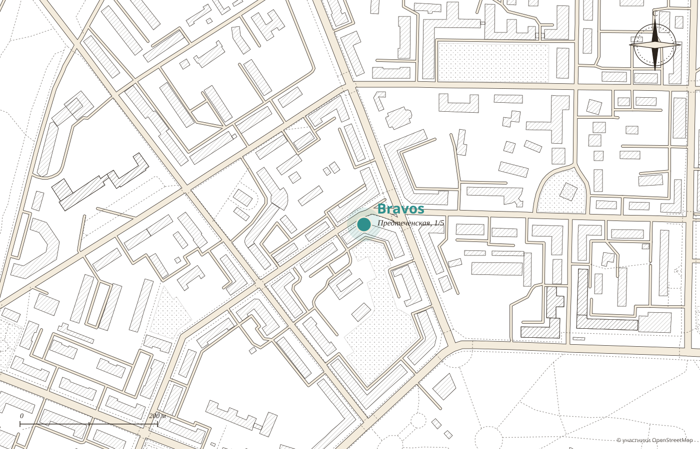

№ 1
Пахлава
«Год назад они покорили меня своей пахлавой»
гость, 2ГИС
···· ₽
Демо-макет студии MERIDIAN · не является официальным сайтом заведения
Кофейня-магазин
Кофе свежей обжарки в чашке и в зёрнах домой, чай на развес, пахлава и сметанник. Фарфоровые чашки, светлый зал в центре города и пять звёзд в 2ГИС.
будни 8:30 до 21:00
выходные 9:30 до 21:00

Прейскурант
Гостья пишет: «Как турист, получила прекрасное впечатление! Можно купить фирменный кофе для фильтра или помола, тоже недорого».


Витрина
«Очень порадовала правильная подача вкусной пахлавы», пишет гостья. А ещё сметанник, медовик и чизкейк, которые гости называют огнём.
№ 1
«Год назад они покорили меня своей пахлавой»
гость, 2ГИС
···· ₽

№ 2
«Самые вкусные вафли, которые мы пробовали»
гостья, 2ГИС
···· ₽

№ 3
«Просто без комментариев»
гостья, 2ГИС
···· ₽

Открытие года
Артём пишет коротко: «Отличный выбор кофейных напитков и не только. Открытие года! Розовый какао!» Рядом в меню горячий бамбл, который гостья назвала лучшим из всех, что пробовала.
С 8:30 в будни


«Были удивлены, что в центре рано негде позавтракать», пишет гость. А здесь с половины девятого: каша, сырники и капучино. Цены подставляются из вашего меню.
Зал
«Место инстаграмное, каждый угол фотогеничен. Заказ приносят сами, к столику», пишет гостья, которая искала, где погреться.

Что любят гости
Из отзывов гостей в 2ГИС. Наведите на слово или нажмите на него: покажем, как это выглядит.

Адрес и часы
«В центре города, хорошо с парковкой», пишет гость.

Для владельца
Зерно, чай и орехи можно выбрать заранее и забрать в кофейне.
Пахлава, сметанник и вафли с фото ещё до прихода.
Лучшая кофейня 2025 и 2026 на первом экране.
Никаких персональных данных: политика конфиденциальности не нужна.